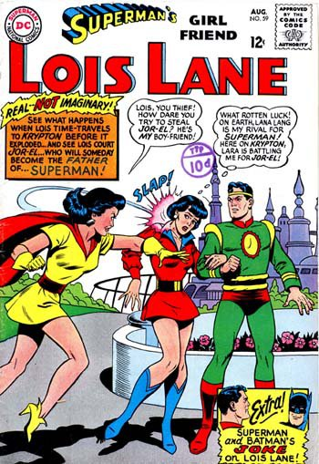

{kind=link}

"Real - NOT Imaginary!"
Congratulations, Christopher, on being in the Green Carnation shortlist – Paperboy is such a lovely read, funny and moving. Did you enjoy writing it?
It didn’t feel as if I wrote it at all. Usually, books are constructs that require skeletal structure, the clothing of language, the development of tone and style, but this was simply me being honest. Before, I was never happy talking about myself, preferring to remain behind the words. But it felt natural, good. Somebody looked at the tag of ‘Memoir’ on the cover and asked me ‘What’s been so interesting about your life that you should write about it?’ and I rather cheekily replied ‘I had an ordinary life but I’m an interesting writer.’ So it was the desire to capture a very English period from my direct experience of it. When you read in public, it’s difficult for audiences to listen, so I developed the book from pieces about my childhood that naturally became chapters.
How do you research a book like this – all the detail of that world and the stories you loved, and the detail of your family? Your reading at Gay’s the Word was so natural, are these stories always ‘with you’ in some way?
I had kept all my diaries, models, notebooks and general rubbish from childhood, and entire conversations were lifted intact. The end-pieces of the hardback featured reproductions of these saved pages. I also wanted to set the story in the context of London’s history, which I carry in my head. Apart from fact-checking, the book was complete. But I wanted it to be subversive, too – the kind of book that sneaks up on a reader – and the best way to do that is to be yourself.
Was it a big decision not to write overtly about your sexuality in Paperboy? Are you holding that story in reserve for a sequel?
It was a carefully considered decision for several reasons. First, I’ve read too many coming out stories and they don’t have that much variance. Second, my sexuality was accepted by my family and considered less important than, say, finding work and feeding us, so it was never an issue. Third, I wanted to go to an earlier point of our collective childhood, to understand the roots of ‘being different’, which is clearly threaded through every chapter. I’ve planned a sequel about being sexually active in 70s London, but I don’t know if I’ll be able to get it published.
Your latest Bryant & May adventure was also very popular with the Green Carnation’s judges – we longlisted it beside Paperboy. How has the series changed as it progressed – has the lure of ‘straight’ crime led to a lessening of the supernatural undercurrent? Will you lose the out-and-out spookiness?
This is subversion again – they look like regular crime novels but they’re all about outsiders. There’s not a single ‘normal’ family in any of the books. And they’re fascinated with spiritual elements. I get a kick out of seeing regular crime readers enjoy something so offbeat, and I won’t compromise those elements for sales.
Amongst the many loves of your childhood, you couldn’t talk enough about Doctor Who for me; will you ever write an original adventure for the Doctor, a novel or an audio drama?
Actually I was asked to once but turned it down because I wasn’t sure I could do justice to the deep back-history of the series. The best Who writers are those who have been steeped in every story arc for generations, and that’s not me. Maybe one day…
What would you nominate as a ‘lost Green Carnation’, a work by a gay male writer that deserves wider recognition?
Where to start? Michael McDowell earned high praise for some thirty volumes including mysteries, comedies, period adventures, psychological suspensers and family epics and gay detective novels. Thomas Tryon had charm, intelligence, style, popularity, success and was ridiculously handsome. He dated a porn star and wrote haunting, powerful novels about outsiders.
What are you reading at the moment?
Everything from Derren Brown’s gayer second volume of memoirs to ‘High Society’, Mike Jay’s exploration of drugs in culture. I’m a judge for the Crime Writers’ Association Gold Dagger Award, which involves reading almost every thriller published this year – and I’m a slow reader!
As to the future, what are you working on at the moment?
Several things, a collection of 25 new short stories, a sequel to ‘Paperboy’, a new Bryant & May mystery and a dark novel entitled ‘There’s Something I Haven’t Told You.’
More about the novel…
 Paperboy
Paperboy
A memoir by Christopher Fowler
Published by Bantam Books
Epigraph: ‘My, you do like a good story, don’t you?’ – Sweeney Todd, Stephen Sondheim and Hugh Wheeler
What’s it about?
The chronicle of a suburban childhood, where imagination is a dirty word, gradually opens to include the story of a marriage. This is a book about loves – family love, love of a good story, and love for Lois Lane…
What they say
‘One of the funniest books I’ve read in a long time… this is the kind of memoir that puts other to shame’ – Time Out
Opening lines:
Early one morning at the height of summer in 1960, I returned from the corner shop with a packet of Weetabix under my arm and stopped to stare at the alien death ray that was scorching the pavement in front of me.
What I saw was a fierce yellow cone of light, ragged at the edges, smashing on to the concrete slab beside the green front gate with the power to melt a thousand suns. It was filled with sparkling, shimmering life forms that writhed and twisted like an invasive virus under a microscope.
I shrugged, navigated my way around the beam, went into the house and ate my breakfast (two Weetabix coated with snowy-white Tate & Lyle sugar and soaked in evaporated milk until they attained the consistency of rotted chipboard.) Then I cut out the coupon on the back of the packet and sent away for a 3-D Spectroscope, so that I could view the three-dimensional animal picture card they gave away free inside.
You can buy Paperboy here at Amazon.co.uk, and Christopher’s website is here: http://www.christopherfowler.co.uk/
(Thanks to Paul Magrs for sourcing the above image!)